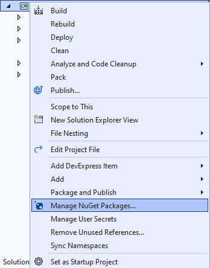

Flags Game
Learn creating a Flags Game using Windows App SDK with this Tutorial

Flags Game shows how you can create a simple game where the aim is to guess the correct country's Flag from a set of Flags using flag assets and a toolkit from NuGet using the Windows App SDK.
Step 1
Follow Setup and Start on how to get Setup and Install what you need for Visual Studio 2022 and Windows App SDK.


Step 2
Then in Visual Studio within Solution Explorer for the Solution, right click on the Project shown below the Solution and then select Manage NuGet Packages...

Step 3
Then in the NuGet Package Manager from the Browse tab search for Comentsys.Toolkit.WindowsAppSdk and then select Comentsys.Toolkit.WindowsAppSdk by Comentsys as indicated and select Install

This will add the package for Comentsys.Toolkit.WindowsAppSdk to your Project. If you get the Preview Changes screen saying Visual Studio is about to make changes to this solution. Click OK to proceed with the changes listed below. You can read the message and then select OK to Install the package.
Step 4
Then while still in the NuGet Package Manager from the Browse tab search for Comentsys.Assets.Flags and then select Comentsys.Assets.Flags by Comentsys as indicated and select Install
This will add the package for Comentsys.Assets.Flags to your Project. If you get the Preview Changes screen saying Visual Studio is about to make changes to this solution. Click OK to proceed with the changes listed below. You can read the message and then select OK to Install the package, then you can close the tab for Nuget: FlagsGame by selecting the x next to it.
Step 5
Then in Visual Studio within Solution Explorer for the Solution, right click on the Project shown below the Solution and then select Add then New Item…

Step 6
Then in Add New Item from the C# Items list, select Code and then select Code File from the list next to this, then type in the name of Library.cs and then Click on Add.
Step 7
You will now be in the View for the Code of Library.cs, within this type the following Code:
using Comentsys.Assets.Flags;
using Comentsys.Toolkit.WindowsAppSdk;
using Microsoft.UI;
using Microsoft.UI.Xaml;
using Microsoft.UI.Xaml.Controls;
using Microsoft.UI.Xaml.Media;
using System;
using System.Collections.Generic;
using System.Linq;
using System.Text.RegularExpressions;
using System.Threading.Tasks;
public class Library
{
private const string space = " ";
private const int flag_size = 72;
private const int font = 20;
private const int size = 3;
private readonly Random _random = new((int)DateTime.UtcNow.Ticks);
private Grid _grid;
private TextBlock _text;
private Dictionary<FlagType, ImageSource> _sources;
private List<int> _indexes = new();
private List<int> _choices = new();
private int _turns;
private bool _over;
private string _name;
// GetSourceAsync & SetSourcesAsync
// Chose, Name, Country, Select & Set
// Play & Add
// Layout & New
}
Class defined so far Library.cs has using for package of Comentsys.Toolkit.WindowsAppSdk
and others including Comentsys.Assets.Flags. It also has Constants to represent things needed in the game and there
are Variables to keep track of values used in the game.
Step 8
While still in the class for Library.cs after the Comment of // GetSourceAsync & SetSourcesAsync type the following Methods:
private async Task<ImageSource> GetSourceAsync(FlagType flagType) =>
await Flag.Get(FlagSet.Square, flagType)
.AsImageSourceAsync();
private async Task SetSourcesAsync() =>
_sources ??= new Dictionary<FlagType, ImageSource>()
{
{ FlagType.Armenia, await GetSourceAsync(FlagType.Armenia) },
{ FlagType.Austria, await GetSourceAsync(FlagType.Austria) },
{ FlagType.Belgium, await GetSourceAsync(FlagType.Belgium) },
{ FlagType.Bulgaria, await GetSourceAsync(FlagType.Bulgaria) },
{ FlagType.Estonia, await GetSourceAsync(FlagType.Estonia) },
{ FlagType.France, await GetSourceAsync(FlagType.France) },
{ FlagType.Gabon, await GetSourceAsync(FlagType.Gabon) },
{ FlagType.Germany, await GetSourceAsync(FlagType.Germany) },
{ FlagType.Guinea, await GetSourceAsync(FlagType.Guinea) },
{ FlagType.Ireland, await GetSourceAsync(FlagType.Ireland) },
{ FlagType.Italy, await GetSourceAsync(FlagType.Italy) },
{ FlagType.Lithuania, await GetSourceAsync(FlagType.Lithuania) },
{ FlagType.Luxembourg, await GetSourceAsync(FlagType.Luxembourg) },
{ FlagType.Mali, await GetSourceAsync(FlagType.Mali) },
{ FlagType.Netherlands, await GetSourceAsync(FlagType.Netherlands) },
{ FlagType.Nigeria, await GetSourceAsync(FlagType.Nigeria) },
{ FlagType.Romania, await GetSourceAsync(FlagType.Romania) },
{ FlagType.Hungary, await GetSourceAsync(FlagType.Hungary) },
{ FlagType.SierraLeone, await GetSourceAsync(FlagType.SierraLeone) },
{ FlagType.Yemen, await GetSourceAsync(FlagType.Yemen) }
};
GetSourceAsync will be used to get an ImageSource for a given FlagType and is used by the Method of SetSourcesAsync which will
create a Dictionary of Flags which these have either horizontal or vertical stripes.
Step 9
While still in the class for Library.cs after the Comment of // Chose, Name, Country, Select & Set type the following Methods:
private List<int> Choose(int minimum, int maximum, int total) =>
Enumerable.Range(minimum, maximum)
.OrderBy(r => _random.Next(minimum, maximum))
.Take(total).ToList();
private string Name(FlagType flag) =>
Enum.GetName(typeof(FlagType), flag);
private string Country(FlagType flag) =>
string.Join(space, new Regex(@"\p{Lu}\p{Ll}*")
.Matches(Name(flag))
.Select(s => s.Value));
private void Select()
{
var choice = _choices[_turns];
var index = _indexes[choice];
var flag = _sources.ElementAt(index);
_name = Name(flag.Key);
_text.Text = Country(flag.Key);
_turns++;
}
private void Set(string name, bool display) =>
(_grid.FindName(name) as Button).Opacity = display ? 1 : 0;
Choose is used to get a set of randomised unique numbers, Name will return the Flag as a string and Country will return the
Name as a formatted string. Select will be used when performing an action in the game and Set will be used to hide a Flag once selected.
Step 10
While still in the class for Library.cs after the Comment of // Play & Add type the following Methods:
private void Play(Button button)
{
if(!_over)
{
string name = button.Name;
if(_name == name)
{
Set(name, false);
if(_turns < size * size)
Select();
else
_text.Text = "You Won!";
}
else
_over = true;
}
if(_over)
_text.Text = "Game Over!";
}
private void Add(int row, int column, int index)
{
var flag = _sources.ElementAt(_indexes[index]);
var border = new Border()
{
BorderBrush = new SolidColorBrush(Colors.Black),
BorderThickness = new Thickness(2)
};
var image = new Image()
{
Height = flag_size,
Width = flag_size,
Source = flag.Value
};
border.Child = image;
var button = new Button()
{
Name = Name(flag.Key),
Content = border
};
button.Click += (object sender, RoutedEventArgs e) =>
Play(sender as Button);
button.SetValue(Grid.RowProperty, row);
button.SetValue(Grid.ColumnProperty, column);
_grid.Children.Add(button);
}
Play is used when interacting with a Button and is used by Add for elements of the game.
Step 11
While still in the class for Library.cs after the Comment of // Layout & New type the following Methods:
private void Layout(Grid grid)
{
var index = 0;
grid.Children.Clear();
grid.RowDefinitions.Clear();
grid.RowDefinitions.Add(new RowDefinition()
{
Height = GridLength.Auto
});
grid.RowDefinitions.Add(new RowDefinition()
{
Height = new GridLength(1, GridUnitType.Star)
});
_text = new TextBlock()
{
FontSize = font,
HorizontalAlignment = HorizontalAlignment.Center
};
Grid.SetRow(_text, 0);
grid.Children.Add(_text);
_grid = new Grid();
for (int row = 0; row < size; row++)
{
_grid.RowDefinitions.Add(new RowDefinition());
for (int column = 0; column < size; column++)
{
if (row == 0)
_grid.ColumnDefinitions.Add(new ColumnDefinition());
Add(row, column, index);
index++;
}
}
Grid.SetRow(_grid, 1);
grid.Children.Add(_grid);
}
public async void New(Grid grid)
{
_turns = 0;
_over = false;
await SetSourcesAsync();
_indexes = Choose(0, _sources.Count, _sources.Count);
_choices = Choose(0, size * size, size * size);
Layout(grid);
Select();
}
Layout will create the look-and-feel of the game and is used by New which will setup and begin a game.
Step 12
Step 13
In the XAML for MainWindow.xaml there will be some XAML for a StackPanel, this should be Removed:
<StackPanel Orientation="Horizontal"
HorizontalAlignment="Center" VerticalAlignment="Center">
<Button x:Name="myButton" Click="myButton_Click">Click Me</Button>
</StackPanel>
Step 14
While still in the XAML for MainWindow.xaml above </Window>, type in the following XAML:
<Grid>
<Viewbox>
<Grid Margin="50" Name="Display"
HorizontalAlignment="Center"
VerticalAlignment="Center" Loaded="New"/>
</Viewbox>
<CommandBar VerticalAlignment="Bottom">
<AppBarButton Icon="Page2" Label="New" Click="New"/>
</CommandBar>
</Grid>
This XAML contains a Grid with a Viewbox which will Scale a Grid.
It has a Loaded event handler for New which is also shared by theAppBarButton.
Step 15
Step 16
In the Code for MainWindow.xaml.cs there be a Method of myButton_Click(...) this should be Removed by removing the following:
private void myButton_Click(object sender, RoutedEventArgs e)
{
myButton.Content = "Clicked";
}
Step 17
Once myButton_Click(...) has been removed, within the Constructor of public MainWindow() { ... } and below the line of this.InitializeComponent(); type in the following Code:
private readonly Library _library = new();
private void New(object sender, RoutedEventArgs e) =>
_library.New(Display);
Here an Instance of the Class of Library is created then below this is the Method of New that
will be used with Event Handler from the XAML, this Method uses Arrow Syntax with the => for an Expression Body which is
useful when a Method only has one line.
Step 18
Step 19
Once running there will be 9 options for Flags available to select from and the aim is to correctly guess which Flag belongs to which country and if you guess all of them correctly you win but get any wrong and you lose or select New to start a new game.
Step 20